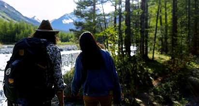
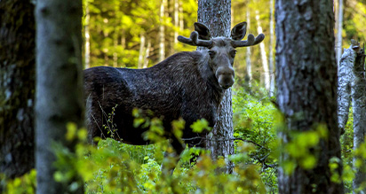

Couples Resort
Activities
Activities Information
Just a short drive from the stunning landscapes of Algonquin Park, our resort offers a variety of seasonal activities to make your stay unforgettable. In the spring and summer, enjoy canoeing, hiking, and exploring the vibrant flora and fauna. As autumn arrives, watch the forest transform with brilliant fall colours, perfect for scenic walks and cozy moments together. Winter brings a serene wonderland, ideal for snowshoeing, ice skating, or simply enjoying the quiet beauty of the snow-covered trails.
Every season offers a new way to connect with nature—and with each other.
Seasonal Activities
Spring
Summer
- Swimming Pool & Patio & Lake
- Algonquin Visitor Centre
- Algonquin Logging Museum
- Algonquin Adventure Tours
- Algonquin Galeairy Lake - Swimming
- Motor, Paddle & Row Boats
- ATVING - Bring Your Own ATV
- Pickleball, Tennis, Badminton & BasketBall
- Kayaks & Canoes
- Hiking & Biking
- Gym & Sports Center
- Spa Services
Fall

About Couples Resort
Algonquin Park
Algonquin Park, the first provincial park in Ontario, protected from the noise and rush of civilization, this world-renowned park in Ontario is a sanctuary for the rugged beauty of the maple, pine, moose, and wolves. A Provincial Park since 1893, the 7500 square kilometers (3500 square miles) of Algonquin Park are home to a diverse and unblemished eco-system that can be found nowhere else on earth.
Glaciers that receded ten thousand years ago created the distinctive rock outcroppings and spring-fed lakes of Algonquin. These mountains of ice have left the park with a rough, star beauty. This, combined with its location, 3 hours northeast of Toronto and 2.5 hours west of Ottawa makes Algonquin an ideal attraction for those looking to escape the hustle of the city.
This majestic park, minutes away and seen from our lakeshore, is awe-inspiring and completely peaceful with the incredible beauty of nature. Come experience the Algonquin grandeur, with all its fresh clean air, deep blue skies, rich green forests and hundreds of pristine lakes. It is impressive.
Algonquin park just steps away from The Couples Resort, Algonquin's 7,630 square kilometers of forests, lakes, and rivers have assumed an almost incalculable importance as a living link with a vanishing past.
Ontario's Algonquin Park and Area has more than 30 species of mammals, many are nocturnal or mostly subterranean and therefore not encountered. Listed are most commonly seen mammals, birds and reptiles in the Algonquin Park & Area.
Visit Algonquin and hear for the first and only time in your lives the mournful howl of a wolf? See first-hand — in Algonquin and nowhere else — a reasonable facsimile of the wilderness that once covered all of Ontario?
For more information visit Algonquin Park Ontario
Couples Resort
FAQ
Can I Go Fishing?
Yes, just keep in mind that each species of sport fish has a regulated open and closed season. Closed season is usually during the spawning period.
For more information on fishing and regulations in Northern Ontario go to:
When Is The Outdoor Pool Open?
Open May long weekend until Labour Day or weather depending into late September
What Are the Sport Centre Hours?
Daily 8:30 am to 4:30 pm.
Where Are The Moose?
The best chance of spotting a moose is along the highway 60 corridor running through Algonquin.
The moose are not generally afraid of tourists, and will continue to eat along side the road. (DO NOT APPROACH A MOOSE!)
Moose are most frequent through May and June when road salt from the winters roads wash into the neighbouring ditches. Moose consider salt to be a treat, especially when mixed with their greens.
In the foliage months, taking a very early hike on the Mizzy Lake Trail also can be rewarding. Moose become rare to see in the winter months.

Couples Resort
Contact
Thank you for taking the time to learn more about our resort and why we are Ontario's number one choice for couples looking to reconnect. For reservation enquiries and further information, please complete our contact form below. Or if you prefer to talked call us at our toll free number listed below.
Address, Phone Number and Form
Couples Resort (Inc.)
1198 Osprey Rd (End of)
Minden, Soyers Lake, ON
K0M 2K0
Phone, Fax and Email
Toll Free: +1 866-202-1179
FAX: +1 613-638-2217
E-mail: info[at]coupleresort.com